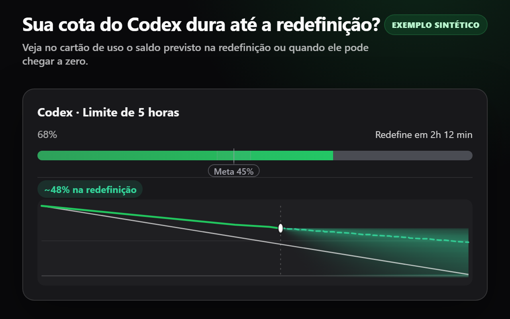
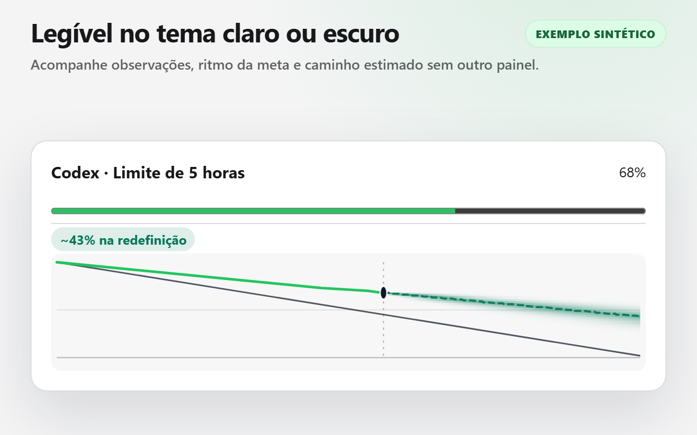
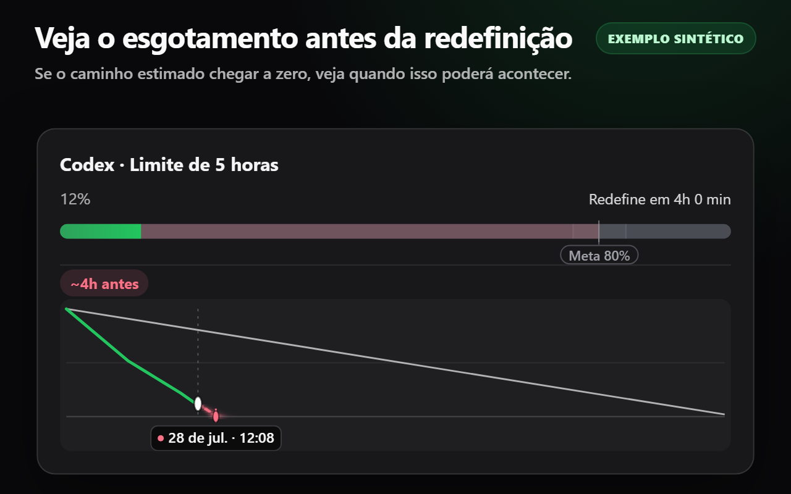
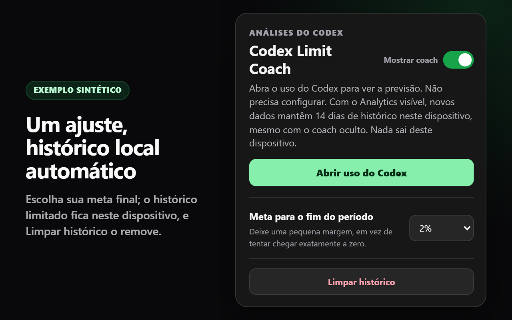

Resultado primeiro
Cada medidor mostra de forma independente o saldo estimado na redefinição ou quando poderá chegar a zero. Nenhum cartão se sobrepõe a outro.
Sua cota do Codex vai durar até a redefinição? Codex Limit Coach mostra o saldo estimado na redefinição ou quando ele pode chegar a zero, ao lado de cada cartão de cota compatível no Codex Analytics.

1. Instale a extensão e abra o popup. 2. Selecione “Abrir uso do Codex” e entre na conta se necessário. 3. Veja a previsão ao lado dos cartões compatíveis. Se o Analytics já estava aberto na instalação, recarregue a página uma vez.
Cada medidor mostra de forma independente o saldo estimado na redefinição ou quando poderá chegar a zero. Nenhum cartão se sobrepõe a outro.
O uso observado orienta a previsão. Sua meta é uma referência discreta, usada apenas para colorir o caminho em relação a um corredor fixo.
Escolha uma meta para o fim do período. O histórico limitado de 14 dias é automático, fica neste dispositivo e pode ser limpo no pop-up.
1. Instale a extensão e abra o popup. 2. Selecione “Abrir uso do Codex” e entre na conta se necessário. 3. Veja a previsão ao lado dos cartões compatíveis. Se o Analytics já estava aberto na instalação, recarregue a página uma vez.




Enquanto o Codex Analytics estiver aberto, o Codex Limit Coach observa passivamente o resultado de cotas que a própria página decodificou com sucesso ao lê-lo. Ele acessa apenas os identificadores estáveis do medidor e do período, a porcentagem usada, a duração do período e o horário de redefinição necessários para a previsão. O horário da observação é gerado localmente, e os resultados são associados aos cartões nativos somente pelo progresso numérico e pelos metadados de redefinição correspondentes — nunca por rótulos traduzidos nem pela ordem dos cartões. As configurações e as amostras automáticas limitadas permanecem em chrome.storage.local.
Ele não inicia outra solicitação de rede, não clona nem decodifica a resposta de forma independente, não inspeciona cookies ou cabeçalhos de autorização, não transmite dados de cota nem acessa campos de conta, e-mail, plano, créditos ou controle de gastos. A única permissão da extensão é storage. Duas declarações de script de conteúdo empacotadas compartilham um único padrão limitado https://chatgpt.com/codex/* para entrada direta e por SPA; o tratamento de dados em tempo de execução e a renderização permanecem no Analytics. Não há contexto em segundo plano, backend, telemetria, publicidade, código remoto nem sistema de contas do Codex Limit Coach.
O Codex Limit Coach é gratuito na Chrome Web Store.